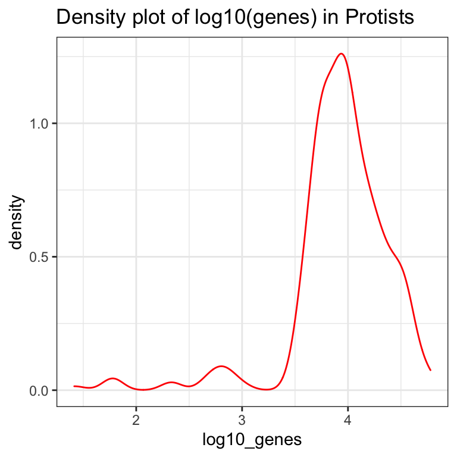

Chapter 7 Functional programming med purrr-pakken


7.1 Inledning og læringsmålene
Emnet handler om hvordan man kan inddrage funktioner for at øge reproducebarhed og gennemskuelighed i dine analyser. Det er ofte tilfældet i biologi, at man har flere datasæts eller variabler, der referer fk. til forskellige samples, replikator eller batches, og man gerne vil lave præcis samme proces på dem alle sammen samtidig.
I dette emne beskæftiger du dig med især pakken Purrr og map() funktioner, som kan benyttes til at lave gentagne baserende analyser i R.
7.1.1 Læringsmålene
I skal være i stand til at:
- Anvende
map()- funktioner til at udføre beregninger iterativt over flere kolonner group_by()ognest()til at lave reproducerbar analyser over forskellige dele af datasættet.- Kombinere
map()ogmap2()med custom funktioner for at øge fleksibilitet i analyserne.
7.1.2 Video ressourcer
- Video 1: Introduction to map functions for iterating over columns
Link her hvis det ikke virker nedenunder: https://player.vimeo.com/video/549630848
- Video 2: Introduction to custom functions and combining them with map
Link her hvis det ikke virker nedenunder: https://player.vimeo.com/video/549630825
- Video 3: Introduction to nest functions for breaking data into sections
Link her hvis det ikke virker nedenunder: https://player.vimeo.com/video/549630798
- Video 4: Introduction to map2 functions
7.2 Iterativ processer med map() fuktioner
Når man lave en interativ proces, vil man gerne lave samme ting gentagne gange. Det kan være for eksempel, at vi har ti variabler og vi gerne vil beregne middelværdien for hver variable. Vi arbejder med datasættet eukaryotes, som indeholder oplysninger om forskellige organismer som hører til eukaryotes - for eksempel deres navne, gruppe, sub-gruppe, antal proteins/genes, genom størrelse og så videre. Man kan få de data indlæste med følgende kommando og se en list over for de forskellige kolon navne nedenfor.
eukaryotes <- read_tsv("https://www.dropbox.com/s/3u4nuj039itzg8l/eukaryotes.tsv?dl=1")## Rows: 11508 Columns: 19
## ── Column specification ────────────────────────────────────────────────────────
## Delimiter: "\t"
## chr (10): organism_name, bioproject_accession, group, subgroup, assembly_ac...
## dbl (7): taxid, bioproject_id, size_mb, gc, scaffolds, genes, proteins
## date (2): release_date, modify_date
##
## ℹ Use `spec()` to retrieve the full column specification for this data.
## ℹ Specify the column types or set `show_col_types = FALSE` to quiet this message.Vi tager udgangspunkt i kun fire variabler, så for at gøre tingene mere overskuelige, har jeg brugt select() til at kun får de fire variabler organism_name,center,group og subgroup i en dataframe
#eukaryotes_full <- eukaryotes
eukaryotes_subset <- eukaryotes %>% select(organism_name, center, group, subgroup)
eukaryotes_subset %>% glimpse()## Rows: 11,508
## Columns: 4
## $ organism_name <chr> "Pyropia yezoensis", "Emiliania huxleyi CCMP1516", "Arab…
## $ center <chr> "Ocean University", "JGI", "The Arabidopsis Information …
## $ group <chr> "Other", "Protists", "Plants", "Plants", "Plants", "Plan…
## $ subgroup <chr> "Other", "Other Protists", "Land Plants", "Land Plants",…Lad os forestille os, at vi gerne vil beregne antallet af unikke organismer (variablen organism_name). Der er en funktion der hedder n_distinct som beregner antallet af unikke værdier i en vector/variable. Her vælger vi organism_name og så tilføjer n_distinct().
eukaryotes_subset %>%
select(organism_name) %>%
n_distinct()## [1] 6111Lad os forestille os, at vi også er interesseret i antallet af unikke værdier i variablerne center, group og subgroup - som er de tre andre kolonner i datasættet. Vi har forskellige muligheder:
- Skrive dem ud - men hvad nu hvis vi havde 100 variabler at håndtere?
eukaryotes_subset %>% select(organism_name) %>% n_distinct()
eukaryotes_subset %>% select(center) %>% n_distinct()
eukaryotes_subset %>% select(group) %>% n_distinct()
eukaryotes_subset %>% select(subgroup) %>% n_distinct()## [1] 6111
## [1] 2137
## [1] 5
## [1] 19- Vi kræver en mere automatiske løsning på det. Vi bruger ikke tid på det her, men der er den traditionele programmering løsning: for loop, som fungerer også i R:
col_names <- names(eukaryotes_subset)
for(column_name in col_names)
{
print(eukaryotes_subset %>%
select(column_name) %>%
n_distinct())
}## Note: Using an external vector in selections is ambiguous.
## ℹ Use `all_of(column_name)` instead of `column_name` to silence this message.
## ℹ See <https://tidyselect.r-lib.org/reference/faq-external-vector.html>.
## This message is displayed once per session.## [1] 6111
## [1] 2137
## [1] 5
## [1] 19Man i teorien kan holde sig til for loops men jeg vil gerne præsentere den tidyverse løsning, som bliver mere intuitiv og nemmere for ændre at læse koden når man er vant til det (det integrerer også bedre med de andre tidyverse pakker).
7.2.1 Introduktion til map() funktioner
Den tidyverse løsning er såkaldte de map() funktioner, som er en del af pakken purrr. Jeg introducerer dem her frem for de base-R løsninger ikke bare fordi de er tidyverse, men fordi de er en meget fleksibelt og nemt at forstå tilgang, når man vænner sig til dem.
Jeg viser hvordan de fungere igennem eukaryotes og bagefter introducerer dem i konteksten af custom funktioner og nest() som kan bruges til at opdele datasættet indtil forskellige dele (ovenpå hvori man kan gentage samme process).
Man anvender map() ved at angiv funktionen navn n_distinct indenfor map(), og map() beregner n_distinct() for hver kolon i datasættet.
eukaryotes_subset %>% map(n_distinct) #do 'n_distinct' for every single column## $organism_name
## [1] 6111
##
## $center
## [1] 2137
##
## $group
## [1] 5
##
## $subgroup
## [1] 19Så kan man se, at vi har fået en list tilbage, med en tal som viser antallet af unikke værdier til hver af de fire kolonner. Det fungerer lidt som den base-R funktion apply, men med apply skal man bruge 2 i anden plads til at fortælle, at vi gerne vil iterate over kolonnerne.
apply(eukaryotes_subset,2,n_distinct)## organism_name center group subgroup
## 6111 2137 5 19Bemærk at vi har fået her en vector af tal tilbage, men vi fået en list med map. Der er faktisk andre varianter af map som kan benyttes til at give resultatet som andre data typer. For eksempel, kan man bruge map_dbl() til at få en double dbl tilbage - en vector af tal ligesom vi fået med apply i ovenstående.
# Apply n_distinct to all variables, returning a double
eukaryotes_subset %>% map_dbl(n_distinct)## organism_name center group subgroup
## 6111 2137 5 19Man kan også bruge map_df() for at få en dataramme (tibble) tilbage - det er særligt nyttigt for os, fordi vi tager altid udgangspunkt i en dataramme når vi skal få lavet et plot.
# Apply n_distinct to all variables, returning a dataframe
eukaryotes_subset %>% map_df(n_distinct)## # A tibble: 1 × 4
## organism_name center group subgroup
## <int> <int> <int> <int>
## 1 6111 2137 5 19For eksempel, kan man tilføje de tal fra map_df direkte ind i et ggplot.
eukaryotes_subset %>%
map_df(n_distinct) %>%
pivot_longer(everything(), names_to = "variable", values_to = "count") %>%
ggplot(aes(x = variable, y = count,fill = variable)) +
geom_col() +
coord_flip() +
theme_minimal()
7.3 Custom fuktioner
Vi kan lave vores egne funktioner og betnytter dem indenfor map til at yderligere øge fleksibiliteten i R. For eksempel, kan det være at vi har en bestemt idé overfor, hvordan vi gerne vil normalisere vores data, og der eksisterer ikke en relevant funktion indenfor R i forvejen.
7.3.1 Simple functions
Vi starter med en simpel funktion fra base-R og så forklare den i den table bagefter. Vi bruger mest en anden form af funktioner i tidyverse som vi kigger på næste, men koncepten er den samme.
my_function <- function(.x)
{
return(sum(.x)/length(.x))
}| Kode | Beskrivelse |
|---|---|
my_function_name |
funktion navn |
<- function(.x) |
fortæl R, at vi lave en funktion med nogle data .x |
sum(.x)/length(.x) |
brug data .x til at beregne middelværdi |
return() |
hvad funktionen skal output - her middelværdi |
Lad også afprøve vores nye funccion ved at beregne den gennemsnitlige værdi for Sepal.Length i iris.
my_function(iris$Sepal.Length)
mean(iris$Sepal.Length)## [1] 5.843333
## [1] 5.8433337.3.2 Custom functions with mapping
Indenfor den tidyverse bruger man en lidt anden måde at skrive samme funktion på.
my_function <- ~ sum(.x)/length(.x)~betyder at vi definere en funktion.xbetyder de data, der vi angiver funktionen (for eksempel variablenSepal.Lengthfrairis). Man bruger den symbol.xhver gang og R ved automatiske hvad det betyder.
Vi kan bruge my_function indenfor map() for at beregne den gennemsnitlige værdi for alle variabler (uden Species), og vi kan se at vi få tilsvarende resultat til funktionen mean():
iris %>%
select(-Species) %>%
map_df(my_function)
iris %>%
select(-Species) %>%
map_df(mean)## # A tibble: 1 × 4
## Sepal.Length Sepal.Width Petal.Length Petal.Width
## <dbl> <dbl> <dbl> <dbl>
## 1 5.84 3.06 3.76 1.20
## # A tibble: 1 × 4
## Sepal.Length Sepal.Width Petal.Length Petal.Width
## <dbl> <dbl> <dbl> <dbl>
## 1 5.84 3.06 3.76 1.20Man kan også placere funktionen direkte indenfor map_df i stedet for at kalde den for nogle (fk. my_funktion):
iris %>%
select(-Species) %>%
map_df(~ sum(.x)/length(.x)) #for each data column, compute the sum and divide by the length## # A tibble: 1 × 4
## Sepal.Length Sepal.Width Petal.Length Petal.Width
## <dbl> <dbl> <dbl> <dbl>
## 1 5.84 3.06 3.76 1.20Vi kan godt specificere andre funktioner.
iris %>%
map_df(~nth(.x,10)) #tag hver kolon, kalde det for .x og finde 10. værdi## # A tibble: 1 × 5
## Sepal.Length Sepal.Width Petal.Length Petal.Width Species
## <dbl> <dbl> <dbl> <dbl> <fct>
## 1 4.9 3.1 1.5 0.1 setosaeller når nth is a tidyverse funktion kan vi bruge %>%:
iris %>%
map_df(~.x %>% nth(10)) #tag hver kolon, kalde det for .x og finde 10. værdi## # A tibble: 1 × 5
## Sepal.Length Sepal.Width Petal.Length Petal.Width Species
## <dbl> <dbl> <dbl> <dbl> <fct>
## 1 4.9 3.1 1.5 0.1 setosaAntallet af distinkt værdier som ikke er NA:
#tag hver kolon, kalde det for .x og beregne n_distinct
iris %>%
map_df(~.x %>% n_distinct(na.rm = TRUE)) #n_dinstict er fra tidyverse## # A tibble: 1 × 5
## Sepal.Length Sepal.Width Petal.Length Petal.Width Species
## <int> <int> <int> <int> <int>
## 1 35 23 43 22 3Bemærk at hvis det er en indbygget funktion og vi benytter default parametre (altså na.rm = FALSE i ovenstående) kan man bare skrive:
iris %>%
map_df(n_distinct)## # A tibble: 1 × 5
## Sepal.Length Sepal.Width Petal.Length Petal.Width Species
## <int> <int> <int> <int> <int>
## 1 35 23 43 22 3Et andet eksempel: tilføje 3 og square:
iris %>%
select(-Species) %>%
map_df(~(.x + 3)^2) %>% head()## # A tibble: 6 × 4
## Sepal.Length Sepal.Width Petal.Length Petal.Width
## <dbl> <dbl> <dbl> <dbl>
## 1 65.6 42.2 19.4 10.2
## 2 62.4 36 19.4 10.2
## 3 59.3 38.4 18.5 10.2
## 4 57.8 37.2 20.2 10.2
## 5 64 43.6 19.4 10.2
## 6 70.6 47.6 22.1 11.6Jo mere funktionen bliver indviklet, jo mere mening det giver at specificere den udenfor den map() funktion:
my_function <- ~(.x - mean(.x))^2 + 0.5*(.x - sd(.x))^2 #a long pointless function
iris %>%
select(-Species) %>%
map_df(my_function) #beregne my_function for hver kolon og output en dataramme ## # A tibble: 150 × 4
## Sepal.Length Sepal.Width Petal.Length Petal.Width
## <dbl> <dbl> <dbl> <dbl>
## 1 9.68 4.89 5.63 1.16
## 2 9.18 3.29 5.63 1.16
## 3 8.80 3.84 6.15 1.16
## 4 8.66 3.55 5.13 1.16
## 5 9.41 5.30 5.63 1.16
## 6 10.6 6.71 4.24 0.705
## 7 8.66 4.51 5.63 0.916
## 8 9.41 4.51 5.13 1.16
## 9 8.46 3.06 5.63 1.16
## 10 9.18 3.55 5.13 1.43
## # … with 140 more rows7.3.3 Effekten af map på andre data typer
I ovenstående fokuser jeg på map i forhold til dataframes. I group_by + nest i nedenstående anvender man map() på en list af dataframes, der hedder data, der tillader os at arbejde med datasæt hvert for sig. Det er derfor værd at tage lidt tid på at se hvordan map() behandler forskellige data typer.
input: vector
.xreferes til en værdi i vectoren. Hvis man tager integer1:10og anvender map, så tager man hvert tal hver for sig og beregner en funktion med det - i følgende simulere man et tal fra den normale fordeling med indstillingenmean=.x:
c(1:10) %>% map_dbl(~rnorm(1,mean=.x))## [1] 1.982341 1.460212 5.566752 4.225571 6.115275 5.748129 9.289555
## [8] 7.149355 7.900811 11.354384input: dataframe
.xrefereres til en variable fra dataframe. I ovenståene er første variableint1og i map tager man den første element med funktionenpluck(1).
tibble("int1"=1:10,"int2"=21:30) %>% map(~.x %>% pluck(1))## $int1
## [1] 1
##
## $int2
## [1] 21Med nest kigger vi på den mulighed vore man laver map over en list, som bliver lavet med funktionen nest().
input: list
.xreferes til et list element - i nedenstående er den første elementc(1,2)så hvis man anvender funktionenmaxså tager man maksimum værdi (2i dette tilfælde).
list(c(1,2),c(2,3),c(3,4)) %>% map(~max(.x))## [[1]]
## [1] 2
##
## [[2]]
## [1] 3
##
## [[3]]
## [1] 4Bemærk at der der kommer kun et tal som resultat, kan man map_dbl i stedet for map - så får man en vector som outputtet, selvom inputtet er en list.
list(c(1,2),c(2,3),c(3,4)) %>% map_dbl(~max(.x))## [1] 2 3 4list af dataframe
.xreferes til et datasæt - så kan man referer til de forskellige variabler i.xsom man plejer i tidyverse.
Følgende er ligesom i tilfælde med koncepten “nesting” i næste sektion. Man tager en list af tibbles og vælger det første tal fra variablen int.
list(tibble("int"=1:10),tibble("int"=1:10),tibble("int"=1:10)) %>%
map_int(~.x %>% pluck("int",1))## [1] 1 1 17.4 Nesting nest()
Vi kommer til at se i næste lektion, at det er meget nyttige at bruge funktionen nest() for at få svar på adskillige statistiske spørgsmål. Det kan være for eksempel:
- Vi har lavet 10 eksperimental under lidt forskellige konditioner, og gerne vil lave præcis samme analyse på alle 10.
- Vi har 5 forskellige type bakterier med 3 replikater til hver, og gerne vil transformere de data på samme måde efter bakterien og replikat.
Funktionen nest() kan virke lidt abstract i starten men koncepten er faktisk ret simpelt. Vi kan opelde vores datasæt (som indeholder vores forskellige konditioner/replikats etc.) med group_by() og så bruge nest() til at gemme de opdelt “sub” datasæt i en list. De bliver gemt indenfor en kolon i en tibble, og det gøre det bekvemt at arbejde med de forskellige datasæt på samme tid (med hjælp af map()).

Lad os opdele eurkaryotes_subset efter variablen ‘group’ og anvende nest():
eukaryotes_subset_nested <- eukaryotes_subset %>%
group_by(group) %>%
nest()
eukaryotes_subset_nested## # A tibble: 5 × 2
## # Groups: group [5]
## group data
## <chr> <list>
## 1 Other <tibble [51 × 3]>
## 2 Protists <tibble [888 × 3]>
## 3 Plants <tibble [1,304 × 3]>
## 4 Fungi <tibble [6,064 × 3]>
## 5 Animals <tibble [3,201 × 3]>Vi kan se at vi har to variabler - group og data. Variablen data er indeholde faktisk fem dataramme (tibble), for eksempel den første datasæt har kun observationerne hvor group er lig med “Other,” den anden dataset har kun observationerne hvor group er lig med “Protists” osv.
Vi kan tjekke ved at kig på den første datasæt: her er to måder at gøre det på:
first_dataset <- eukaryotes_subset_nested$data[[1]]
first_dataset <- eukaryotes_subset_nested %>% pluck("data",1)
first_dataset %>% head()## # A tibble: 6 × 3
## organism_name center subgroup
## <chr> <chr> <chr>
## 1 Pyropia yezoensis Ocean University Other
## 2 Thalassiosira pseudonana CCMP1335 Diatom Consortium Other
## 3 Guillardia theta CCMP2712 JGI Other
## 4 Cyanidioschyzon merolae strain 10D National Institute of Genetics… Other
## 5 Galdieria sulphuraria Galdieria sulphuraria Genome P… Other
## 6 Phaeodactylum tricornutum CCAP 1055/1 Diatom Consortium OtherHvis vi gerne vil tilbage til vores oprindeligt datasæt, kan vi brug unnest() og specificer kolonnen data:
eukaryotes_subset_nested %>%
unnest(data) %>%
head()## # A tibble: 6 × 4
## # Groups: group [1]
## group organism_name center subgroup
## <chr> <chr> <chr> <chr>
## 1 Other Pyropia yezoensis Ocean University Other
## 2 Other Thalassiosira pseudonana CCMP1335 Diatom Consortium Other
## 3 Other Guillardia theta CCMP2712 JGI Other
## 4 Other Cyanidioschyzon merolae strain 10D National Institute of Ge… Other
## 5 Other Galdieria sulphuraria Galdieria sulphuraria Ge… Other
## 6 Other Phaeodactylum tricornutum CCAP 1055/1 Diatom Consortium OtherSpørgsmålet er: hvordan kan vi inddrage “nested” data indenfor vores analyser?
7.4.1 Anvende map() med nested data
De fleste gange vi arbejder med nested data, er fordi vi gerne vil lave samme ting på hver af de “sub” datasæt. Derfor hænger det sammen med funktionen map(). Den typiske process er:
- Tag nested datasæt
- Tilføj en ny kolon med
mutate(), hvor vi: - Tag hver datasæt fra kolonnen
dataog brugmap(), i nedenstående tilfælde til at finde antallet af rækkerne.
eukaryotes_subset_nested %>%
mutate(n_row = map_dbl(data,nrow))## # A tibble: 5 × 3
## # Groups: group [5]
## group data n_row
## <chr> <list> <dbl>
## 1 Other <tibble [51 × 3]> 51
## 2 Protists <tibble [888 × 3]> 888
## 3 Plants <tibble [1,304 × 3]> 1304
## 4 Fungi <tibble [6,064 × 3]> 6064
## 5 Animals <tibble [3,201 × 3]> 3201Vi kan også bruge en custom funktion. I nedenstående beregne man antallet af unikke organisme fra variablen orangism_name i datasættet. Husk:
~betyder at vi lave en funktion, som kommer til at fungere for alle de fem datasæt.- Tag et datasæt og kalde det for
.x- det referer til en bestemt datasæt fra en af de fem datasæt som hører under kolonnendatai dennest()data. - Vælg variablen
organism_namefra.x - Beregn
n_dinstinct
n_distinct_organisms <- ~ .x %>% #take data
select(organism_name) %>% #select organism name
n_distinct #give back distinct#repeat function for each of the five datasets:
eukaryotes_subset_nested %>%
mutate(n_organisms = map_dbl(data, n_distinct_organisms))## # A tibble: 5 × 3
## # Groups: group [5]
## group data n_organisms
## <chr> <list> <dbl>
## 1 Other <tibble [51 × 3]> 35
## 2 Protists <tibble [888 × 3]> 490
## 3 Plants <tibble [1,304 × 3]> 673
## 4 Fungi <tibble [6,064 × 3]> 2926
## 5 Animals <tibble [3,201 × 3]> 1987Her er en anden eksempel. Her handler det om de eukaryotes data (ikke den subset), som har oplysninger om fk. GC-content med variablen gc. Her bruger vi pull i stedet for select - det er næsten den samme men med pull() få vi en vector som fungerer med median som er en base-R funktion.
# func_gc <- ~ .x %>%
# pull(gc) %>% # ligesom select men vi har bruge for en vector for at beregne median
# median(.x,na.rm=T) # `na.rm` fjerne `NA` værdier)
func_gc <- ~median(.x %>% pull(gc),na.rm=T)
ekaryotes_gc_by_group <- eukaryotes %>%
group_by(group) %>%
nest() %>%
mutate("median_gc"=map_dbl(data, func_gc))
ekaryotes_gc_by_group## # A tibble: 5 × 3
## # Groups: group [5]
## group data median_gc
## <chr> <list> <dbl>
## 1 Other <tibble [51 × 18]> 46.7
## 2 Protists <tibble [888 × 18]> 49.4
## 3 Plants <tibble [1,304 × 18]> 37.9
## 4 Fungi <tibble [6,064 × 18]> 47.5
## 5 Animals <tibble [3,201 × 18]> 40.6Og jeg kan bruge resultatet ind i et plot ligesom vi plejer:
ekaryotes_gc_by_group %>%
ggplot(aes(x=group,y=median_gc,fill=group)) +
geom_bar(stat="identity") +
coord_flip() +
theme_minimal() 
flere statistik på en gang
Lave funktionerne:
func_genes <- ~median(.x %>% pull(genes), na.rm=T)
func_proteins <- ~median(.x %>% pull(proteins),na.rm=T)
func_size <- ~median(.x %>% pull(size_mb), na.rm=T) Anvende nest():
eukaryotes_nested <- eukaryotes %>%
group_by(group) %>%
nest() Tilføje resultatet over de fem datasæt med mutate():
eukaryotes_stats <- eukaryotes_nested %>%
mutate(mean_genes = map_dbl(data,func_genes),
proteins = map_dbl(data,func_proteins),
mean_size_mb = map_dbl(data,func_size))Husk at fjerne kolonnen data før man anvende pivot_longer() (ellers får man en advarsel):
eukaryotes_stats %>%
select(-data) %>%
pivot_longer(-group) %>%
ggplot(aes(x=group,y=value,fill=group)) +
geom_bar(stat="identity") +
facet_wrap(~name,scales="free",ncol=4) +
theme_bw()
7.5 Andre brugbar purrr
7.5.1 map2() function for flere inputs
Funktionen map2() kan bruges ligesom map() men tager 2 “input” i stedet for kun én. I følgende eksempel angiver jeg to kolonner fra datasættet eukaryotes_stats, mean_genes og proteins og beregner sum, som bliver lagret takket være funktionen mutate som colstat.
eukaryotes_stats %>% mutate(colstat = map2_dbl(mean_genes,proteins,sum))## # A tibble: 5 × 6
## # Groups: group [5]
## group data mean_genes proteins mean_size_mb colstat
## <chr> <list> <dbl> <dbl> <dbl> <dbl>
## 1 Other <tibble [51 × 18]> 11354. 11240. 49.7 22594
## 2 Protists <tibble [888 × 18]> 8813 8628. 33.5 17442.
## 3 Plants <tibble [1,304 × 18]> 33146. 37660 358. 70806.
## 4 Fungi <tibble [6,064 × 18]> 10069 10034 32.2 20103
## 5 Animals <tibble [3,201 × 18]> 20733 25161 692. 45894Bemærk at præcis samme resultat kan fås ved at bare lægger de to kolonner sammen:
eukaryotes_stats %>% mutate(colstat2 = mean_genes + proteins)## # A tibble: 5 × 6
## # Groups: group [5]
## group data mean_genes proteins mean_size_mb colstat2
## <chr> <list> <dbl> <dbl> <dbl> <dbl>
## 1 Other <tibble [51 × 18]> 11354. 11240. 49.7 22594
## 2 Protists <tibble [888 × 18]> 8813 8628. 33.5 17442.
## 3 Plants <tibble [1,304 × 18]> 33146. 37660 358. 70806.
## 4 Fungi <tibble [6,064 × 18]> 10069 10034 32.2 20103
## 5 Animals <tibble [3,201 × 18]> 20733 25161 692. 45894Der er dog mange mere indviklet situationer hvor man ikke kan gå udenom map2:
eukaryotes_stats_with_plots <- eukaryotes_stats %>%
mutate(log10_genes = map(data,~log10(.x %>% pull(genes)))) %>%
mutate(myplots = map2(group,log10_genes,
~ tibble("log10_genes"=.y) %>%
ggplot(aes(x=log10_genes)) +
geom_density(colour="red",alpha=0.3) +
theme_bw() + ggtitle(paste("Density plot of log10(genes) in",.x))))eukaryotes_stats_with_plots %>% pluck("myplots",2)## Warning: Removed 613 rows containing non-finite values (stat_density).
Der er flere map funktion der tager flere input fk. pmap - jeg har ikke tid til at dække dem men du kan godt læse om dem hvis du har bruge for dem: https://purrr.tidyverse.org/reference/map2.html
7.5.2 Transformer numeriske variabler
Som sidste bemærk, her er en brugbar variant af map - her kan man lave noget på kun bestemte variabler - for eksempel i følgende anvender jeg funktionen log2() på alle numeriske variabler. Bemærk at man er nødt til at anvende as_tibble() igen bagefter (som kun fungerere hvis alle variabler har stadig samme længde efter map_if()):
eukaryotes %>% map_if(is.numeric,~log2(.x)) %>% as_tibble()## # A tibble: 11,508 × 19
## organism_name taxid bioproject_acce… bioproject_id group subgroup size_mb
## <chr> <dbl> <chr> <dbl> <chr> <chr> <dbl>
## 1 Pyropia yezoensis 11.4 PRJNA589917 19.2 Other Other 6.75
## 2 Emiliania huxley… 18.1 PRJNA77753 16.2 Prot… Other P… 7.39
## 3 Arabidopsis thal… 11.9 PRJNA10719 13.4 Plan… Land Pl… 6.90
## 4 Glycine max 11.9 PRJNA19861 14.3 Plan… Land Pl… 9.94
## 5 Medicago truncat… 11.9 PRJNA10791 13.4 Plan… Land Pl… 8.69
## 6 Solanum lycopers… 12.0 PRJNA119 6.89 Plan… Land Pl… 9.69
## 7 Hordeum vulgare … 16.8 PRJEB34217 19.1 Plan… Land Pl… 12.1
## 8 Oryza sativa Jap… 15.3 PRJNA12269 13.6 Plan… Land Pl… 8.55
## 9 Triticum aestivum 12.2 PRJNA392179 18.6 Plan… Land Pl… 13.9
## 10 Zea mays 12.2 PRJNA10769 13.4 Plan… Land Pl… 11.1
## # … with 11,498 more rows, and 12 more variables: gc <dbl>,
## # assembly_accession <chr>, replicons <chr>, wgs <chr>, scaffolds <dbl>,
## # genes <dbl>, proteins <dbl>, release_date <date>, modify_date <date>,
## # status <chr>, center <chr>, biosample_accession <chr>7.6 Problemstillinger
Problem 1) Lave Quiz på Absalon “Quiz - functional programming”
Problem 2) map() øvelse
Eksempel:
diamonds %>% select(cut,color,depth) %>% map_df(n_distinct)## # A tibble: 1 × 3
## cut color depth
## <int> <int> <int>
## 1 5 7 184Husk også referencen med de forskellige varianter af map() som kan bruges for at få en anden output type.
Indlæse diamonds med data(diamonds). Brug map() funktioner til at beregne følgende:
a) Select variabler cut, color og clarity og beregne antallet af distinkt værdier til hver (anvende funktionen n_distinct). Resultatet skulle være en list (anvende deault map() funktion).
b) Select variabler som er numeriske og beregne den median værdi til hver. Resultatet skal være en double.
c) Brug alle variabler og return de datatyper (funktion en typeof). Resultatet skal være en dataramme.
Problem 3) map() øvelse med custom funktioner
Indlæse diamonds med data(diamonds).
Husk at når man inddrager nogle data .x, for eksempel når man vil bruge en custom funktion eller specificer non-default indstillinger såsom na.rm=TRUE (for at fjerne NA værdier i beregningen) i funktionen, skal man angiv ~ i starten:
diamonds %>% map_df(n_distinct) #specificere funktion unden instillinger
diamonds %>% map_df(~n_distinct(.x,na.rm = TRUE)) #custom funktiona) Afprøve følgende kode linjer og beskrive hvad der sker.
diamonds %>% select(carat, depth, price) %>% map_df(~mean(.x,na.rm=T))
diamonds %>% filter(cut=="Ideal") %>% select("color","clarity") %>% map(~nth(.x,100))
diamonds %>% select(carat, depth, price) %>% map_df(~ifelse(.x>mean(.x),"big_value","small_value"))Brug custom funktioner indenfor map() til at beregne følgende:
- Udvælg variabler
carat,depth,tableogpriceog for hver kolonne tilføj tre og så dernæst tag square (^2). Resultatet skal være en dataramme. - Udvælg numeriske variabler og angiv
TRUEhvis den først værdi i kolonnen (betegnet mednth(.x,1)) er større en den median værdi i kolonnen, ellersFALSE. Resultatet skal være en logical.
Problem 4) map på forskellige datatyper
Vi har set, at når vi kører map på en dataframe, laver man en funktion over hver kolonne. Lad os se hvad der forgår hvis man har andre datatyper:
a) (En vector af tal)
- Kør følgende - hvad sker der?
c(1:10) %>% map_dbl(~rnorm(1,mean=.x,sd=1))- Tag udangspunkt i
c(1:10)og anvendmap_dbltil at beregne denlog()af hvert tal i vektoren (angiv indstillingenbase=5):
c(1:10) %>% ???b) (En list af tibbles)
my_list_of_tibbles <- list( tibble("letter" = c("a","a","a"), "number" = c(1,2,3)),
tibble("letter" = c("a","b","b"), "number" = c(3,5,1)),
tibble("letter" = c("a","b","a"), "number" = c(3,6,3)))- Kør følgende kode, der tager den første
tibbleudvælger observationer hvorletter= “a” og dernæst beregner den middelværdi af “number.”
my_list_of_tibbles %>% pluck(1) %>% filter(letter=="a") %>% summarise(mn = mean(number))- Nu at jeg kan se, at min kode virker til den første
tibble, kan jeg ændre den til en funktion og anvende den medmap()til at lave samme process på alle dataframes - prøve at køre følgende.
my_list_of_tibbles %>% map(~.x %>% filter(letter=="a") %>% summarise(mn = mean(number)))- Tag udgangspunkt i
my_list_of_tibblesog for hver tibble select alle tilfælde hvor variabennumberer 3 og dernæst optæl hvor mangeaer tilbage i variablenletter(man kan afprøve på den førstetibblehvis det hjælper).
Problem 5) group_by/nest øvelse
a) For datasættet iris, anvend group_by(Species) og tilføj dernæst nest(), og kigger på resultatet.
b)
- tilføj
pull(data)og se på resultatet - fjern
pull(data)og tilføjpluck("data",1)i stedet for, for at se den første dataramme. - tilføj
unnest(data)i stedet for og se på resultatet - tilføj følgende i stedet for og prøve at forstå hvad der sker:
mutate(new_column_nrow = map_dbl(data,nrow))mutate(new_column_ratio = map(data,~(.x$Sepal.Width/.x$Sepal.Length)))
b) Skift mellem long og wide form
- Afprøv også følgende funktion med
map()-funktionen på kolonnendata(angiv ny kolonnenavnenew_column_longimutate()).
#add an id and put data into long form
my_func_longer <- ~.x %>% mutate(id=1:50) %>% pivot_longer(cols=-id)- Skriv en funktion og anvend den på kolonnen
new_column_long, der laver hvert datasæt i kolonnen om til wide-form igen (lav ny kolonne “new_column_wide”).
my_func_wider <- ??? #lave long data om til wide form (husk at angiv names_from,values_from,id_cols)
iris_nested_stats %>% ???#anvend din funktion - Anvend
pluckpå kolonnernenew_column_longognew_column_widetil at kigge på den første datasæt for at se, om du har outputtet i long/wide form som forventede.
Problem 6) group_by/nest + map på datasættet mtcars
a) Åbn mtcars med data(mtcars) og anvende group_by()/nest() for at opdele datasættet i tre efter variablen cyl.
b) Lave nye kolonner med map og inddrage hensigtsmæssige funktioner, som beskriver dine tre datasæt, der er lagret i kolonne data (outputtet skal være dbl):
- Antal observationer
- Korrelationskoefficient mellem
wtogdrat(funktionencor) - Antal unikke værdier fra variablen
gear
c) Omsætte dine statistikke til et plot for at sammenligne de tre datasæt.
Problem 7) Forberedelse til næste lektion
For at bedre kunne se værdien af at bruge group_by()/nest() + map() kan vi gennemgå en simpel eksampel som indledning til vores næste lektion.
Tag funktionen:
my_func <- ~ t.test(.x$Petal.Width,.x$Sepal.Length)- anvend
group_by(Species)og dernæstnest()på datasættetiris. - tilføj
mutate()til at lave en ny kolon som heddert_testog bruge funktionen indenformap()på kolonnendata. - tilføj
pull(t_test)til din kommando - man får de tre t-tests frem, som man lige har beregnet. - prøv
unnest(t_test)i stedet forpull(t_test)- man får en advarsel fordi de t-test resultater ikke er i en god form til at vise indenfor en dataramme. Vi vil gerne ændre deres output til tidy-form først.
- Nu installer R-pakken
broom(install.packages("broom")) - Lav samme som ovenstående men bruge følgende funktion i stedet for (
glance()få statistikkerne frat.test()ind i en pæn form (tidy))
library(broom)
my_func <- ~ t.test(.x$Petal.Width,.x$Sepal.Length) %>% glance()Tilføj
pullellerunnesttil din kommando som før og se på resultatet.Man får en pæn dataramme frem med alle de forskellige statistikker fra
t.test().Vælge en statistik og omsætte den til et plot.
Problem 8) Hvis du færdig før tid kan du se videorne til næste emne i morgen :)
7.7 Ekstra notater og næste gang
https://r4ds.had.co.nz/iteration.html https://sanderwuyts.com/en/blog/purrr-tutorial/